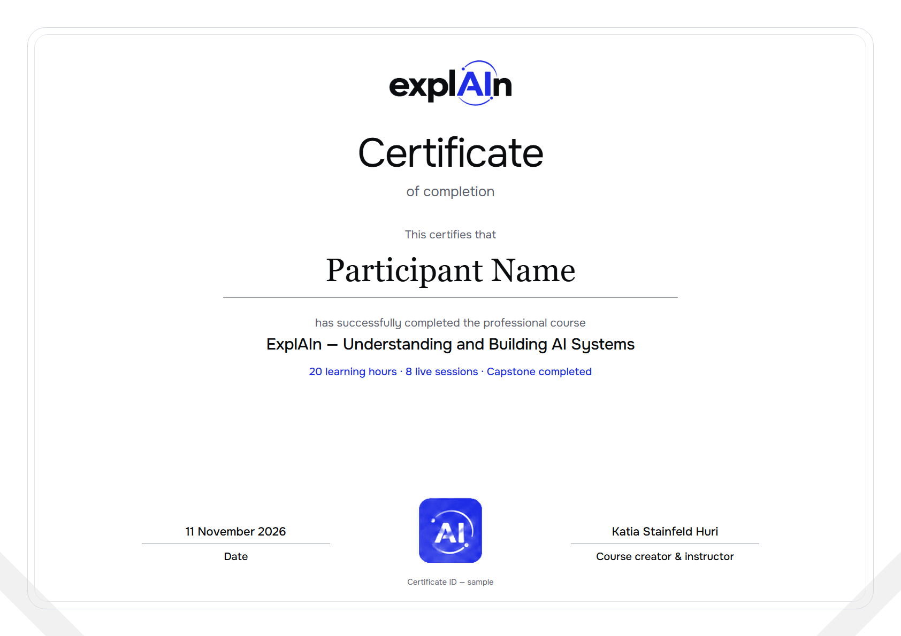
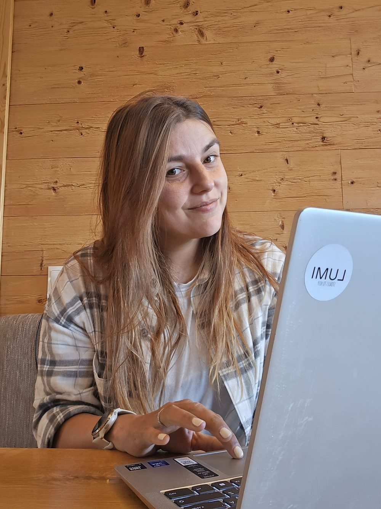

The ExplAIn syllabus
Ten modules in three acts: how the model works, where it goes wrong, then tools, agents and evals. About 20 hours, with a capstone.
- Act 1Understand the modelModules 00 to 03
- Act 2Apply itModules 04 to 06
- Act 3Build with itModules 07 to 09
- ThenThe capstoneMap a real AI product
Module 00 is free: the chapter and its 17-minute episode. Open it
Act 1, understand the model. What the thing actually is.
00How we got here
“Almost none of the maths is new.”
FreeHow old the maths is, why it took so long, the two AI winters, what changed in 2017.
01What is an AI system?
“The model generates. The system does.”
One nesting map, model against product, training against inference, the system map.
02How a model sees the world
“Context is the model’s working reality.”
Tokens, embeddings and attention, context windows, token cost.
03How models learn
“Training changes the model. Inference uses it.”
Pretraining, why it is not a database, post-training, where change lives.
Act 2, apply it. Where it goes wrong, and what you do.
04Reasoning, sampling and hallucination
“Fluency is not the same as truth.”
Token probabilities, sampling and temperature, hallucination, checks that decide what ships.
05Context engineering
“Construct the world the model reasons inside.”
The anatomy of a context, instructions against data, order and hygiene, prompt injection.
06Retrieval, memory and fine-tuning
“Information, state and behavior are different problems.”
Semantic search, RAG with sources, where memory lives, when to fine-tune.
Act 3, build with it. Making it act, and proving it works.
07How models interact with the real world
“The model requests. Another system acts.”
The tool loop, tools as ordinary code, permissions by risk, MCP.
08Agents without the mythology
“An agent is a loop with model-selected decisions.”
Workflow or agent, the agent loop, compounding errors, autonomy by design.
09Building AI you can trust
“A demo is not a system.”
Golden sets, three ways to grade, regressions, quality against cost and latency.
The capstone, a map of a real AI product. Answer eight questions about a product you use.
- What is the model doing?
- What enters the context?
- Where does knowledge come from?
- Where does state live?
- Which tools can act?
- What is probabilistic?
- What must be deterministic?
- How do we know it works?

Who the course is for. Technical depth, in plain language.
- Software engineers, data people, technical PMs, founders and engineering leads
- People who use AI but find the concepts scattered
- Anyone who has to design, review or lead AI work
Not for you if you want ready-made prompts, full transformer maths, or a course about one vendor’s tools.
Start with Module 00, free
How we got here: the chapter and its 17-minute episode. Taught by Katia.
